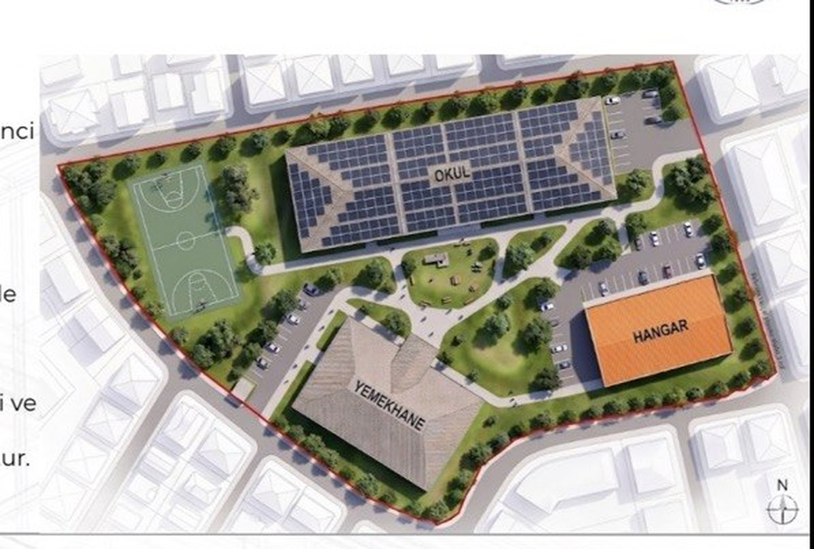

Graduation Thesis · 2026
Next-Generation Sustainable School Campus Design
Design of a next-generation sustainable vocational school campus for 400 students in Trabzon Değirmendere, combining structural design with sustainability. Structural side: full seismic analysis of a 4-story reinforced concrete building in SAP2000 to the Turkish Building Earthquake Code (TBDY-2018) — modal analysis, equivalent static vs. response spectrum base shear, story drift, and irregularity checks — plus campus modeling in ETABS and ideCAD. Sustainability side: solar PV, rainwater harvesting, passive insulation, and IoT-based monitoring. Completed with three other students under the supervision of Prof. Dr. Metin Hüsem.
SAP2000ETABS
ideCADAutoCAD
RevitTBDY-2018